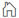
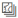
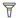
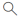
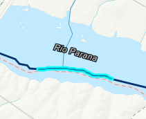

Informações gerais:
A plataforma SARDIM é destinada à visualização de dados de permanência e
tempo de retorno das vazões dos rios da América do Sul. Baseados em simulações do modelo hidrológico
MGB-SA (Modelo de Grandes Bacias - South America), os resultados são apresentados para cada trecho de
rio do mapa, considerando os valores de vazão diários da última data de atualização da plataforma e a
análise de eventos extremos no mês.
A base de dados de chuva utilizada como forçante principal do modelo MGB-SA
para as estimativas em tempo quase real é proveniente da missão GPM (Global Precipitation Measurement).
Os dados consistem em uma combinação de produtos com diferentes processamentos (GPM Final, Late e Early)
que são distribuídos pela NASA (National Aeronautics and Space Administration) com aproximadamente 4 horas de
latência. Já os dados de precipitação utilizados para estimar o histórico de vazão de 1980 até 2015 são
oriundos da base MSWEP. Sobre os dados do GPM, ainda é aplicada uma correção de viés para reduzir os erros
sistemáticos em relação à base de chuva originalmente utilizada pelo modelo MGB-SA (MSWEP).
A permanência da vazão para um trecho de rio é obtida através da análise de
sua curva de duração. Essa curva informa graficamente com que frequência a vazão de uma determinada
magnitude é igualada ou excedida durante o período de registro das vazões. No caso da plataforma SARDIM,
o período analisado corresponde ao dia 01/01/1980 até a última data de atualização do site (localizada
no canto superior direito do menu principal) para o cálculo da permanência padrão, enquanto a
permanência sazonal é baseada apenas em dados de vazão referentes ao mês atual de todos os anos do
período em questão.
O tempo de retorno é o intervalo de tempo em anos estimado no qual se espera
a ocorrência de um determinado evento. Considerando por exemplo uma vazão de um trecho de rio com tempo
de retorno igual a 5 anos, espera-se que o valor dessa vazão seja igualado ou superado naquele trecho,
em média, uma vez a cada 5 anos. A plataforma SARDIM adota valores positivos de tempo de retorno
(gradiente azul) para eventos de cheias e valores negativos (gradiente vermelho) para eventos de secas
ou estiagens.
Funcionalidades:
Ampliar zoom no mapa.
Reduzir zoom no mapa.
Entrar no modo de tela cheia.
 Retornar à configuração de mapa inicial.
Lista de camadas disponíveis.
Selecione uma das seis opções de resultados na lista de camadas para visualizar a variação de cor nos rios conforme o
parâmetro escolhido: permanência atual, permanência sazonal atual, permanência máxima ou mínima nos últimos 30
dias, tempo de retorno atual, tempo de retorno máximo ou mínimo nos últimos 30 dias ou a permanência máxima ou mínima
em um mês escolhido.
 Mudar mapa de fundo para imagem de
satélite.
 Aplicar filtro na rede drenagem para
visualizar apenas trechos de rios com área de drenagem acumulada à montante maior ou igual à
especificada na ferramenta.
 Ferramenta de pesquisa: é possível
pesquisar um endereço/nome de rio usando o Leaflet Control Geocoder.
Visualizando os resultados:

Para visualizar os resultados, clique com o botão esquerdo do mouse sobre
um trecho de rio. O trecho selecionado ficará automaticamente em destaque ao passar o cursor do mouse.
Após selecionar o trecho de rio, uma tabela com os resultados principais
aparecerá na tela em uma janela de pop-up.
Deslizando o scroll do mouse na janela de pop-up, é possível visualizar o
gráfico das vazões médias semanais dos últimos 2 meses. Passe o cursor do mouse sobre as colunas do
gráfico para visualizar o valor exato da vazão média na semana desejada.
Ainda mais embaixo visualiza-se as vazões máximas e mínimas anuais desde 1980 até o ano anterior.
O gráfico ainda demonstra a situação da vazão atual comparada com essas situações de extremos.